Welcome to KonaSearch
KonaSearch brings the world of information from sources like Outlook ® and SharePoint ® to your Salesforce ® experience and puts it into context to help you find deals and close them faster.
Ready to get started?
Follow the steps below to get KonaSearch installed correctly.
Click or Hover on a link to see the corresponding screenshot reference.
Contact Kona
- info@konadsc.com
- 603-494-0753
- @konadatasearch
Install KonaSearch
- Go to the KonaSearch Operations Tab
- Click the Configure Button
- Click the Create Button
- Click the Test Button
- Click the Complete Button
When begin the KonaSearch Install process, Please do not close the Operations Page. Open a new tab in your browser to complete steps 2-4, while the indexing completes on the Operations page.
 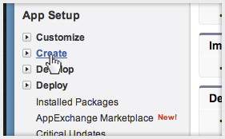
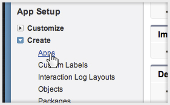
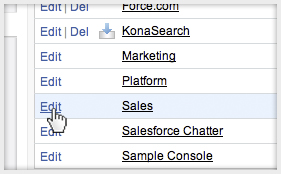
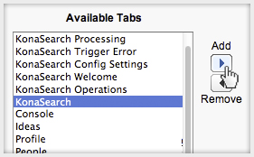
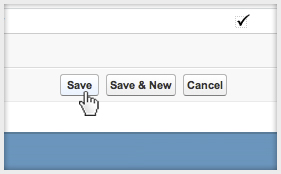
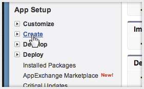
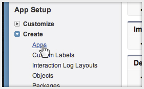
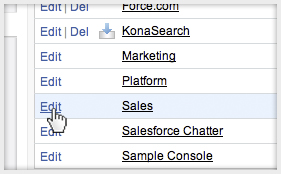
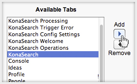
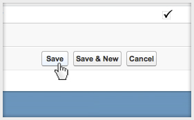

 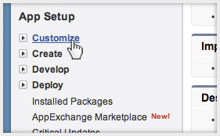
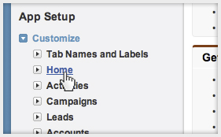
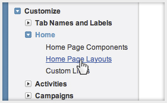
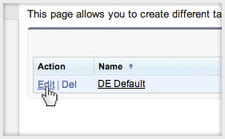
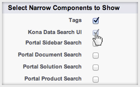
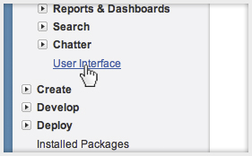
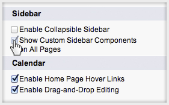
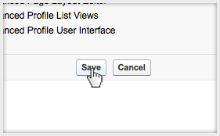
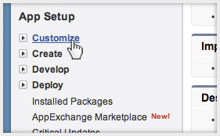
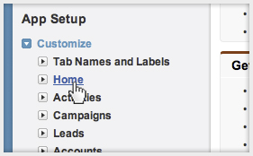
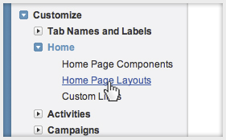
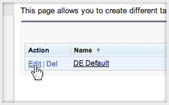
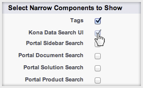
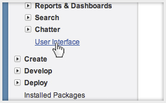
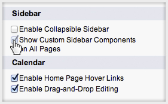
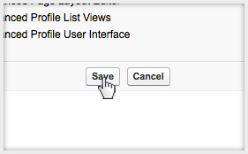
Add KonaSearch Gadget
- Go to Setup from User Profile Dropdown
- Click Customize Under App Setup
- Click Home Under Customize
- Click Home Page Layouts Under Home
- Click Edit on Desired Layout
- Check the Box for Kona Data Search UI
- Click User Interface Under App Setup
- Check the Box for Sidebar on All Pages
- Save the User Interface Page
Grant Access to Users
- Go to Setup from User Profile Dropdown
- Click Manage Users Under Administration Setup
- Click Profiles Link Under Manage Users
- Click Edit on a Desired Profile
- Select DefaultOn from the Dropdown
- Save the User Profile at bottom of page
- Select Previous Profile Name
- Click Edit Under Visualforce Page Access
- Add the KonaDSC.KonaDataSeach Page